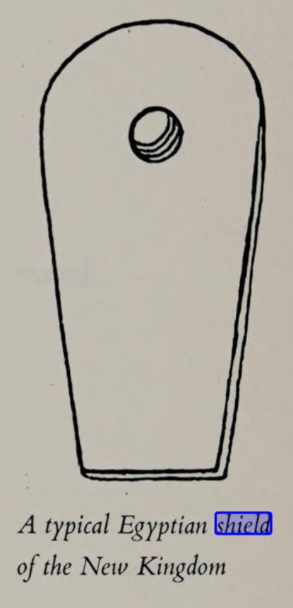
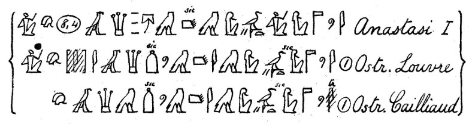
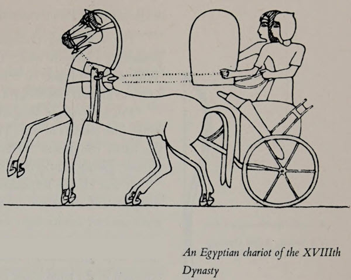
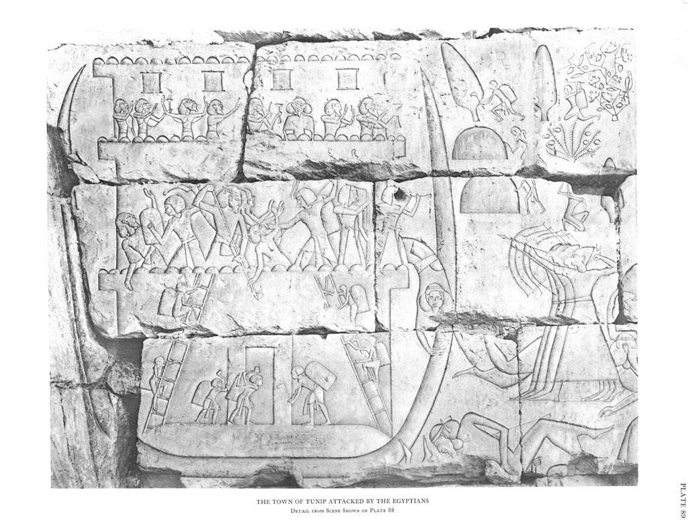

Grapow, Die bildlichen ausdrücke des aegyptischen vom denken und dichten einer altorientalischen sprache (Leipzig, 1924), p. 172 
Of the weapons, the shield has most often been used figuratively, usually metaphorically of the king and the gods.
The king is the fortress for his troops and their shield in the day of battle2;
the great shield that covers Egypt3,
or the shield that protects Edfu4.
Similarly, Anch-Hor also calls himself the first shield of Egypt5.
The gods protect the king and his soldiers as a shield: O Amon, crown the king and be a shield behind him every day6.
In the battle in which Montu and Baal accompany the king, Anat and Astarte are his shield7.
With the troops was the hand of God and Amon was with them as a shield8,
and to the king Amon says: I give you my sword as a shield for your chest9
or my hand is the shield for your chest10.
• Deutsch: Schild.
Am häufigsten ist von den Waffen der Schild bildlich verwendet worden, und zwar in der Regel metaphorisch vom König und von Göttern. Der König ist die Festung für seine Truppen und ihr Schild am Tage des Kampfes2; der große Schild, der Ägypten verhüllt3, oder der Schild, der Edfu schützt4. Åhnlich nennt Sich auch Anch-Hor den ersten Schild Ägyptens5.
Den König und seine Soldaten beschirmen d'e Götter als Schild: o Amon, kröne den König und sei ein Schild hinter ihm alle Tage6. Im Kampf, in dem Month und Baal den König begleiten, sind Anat und Astarte sein Schild7. Mit den Truppen war die Hand Gottes und Amon war bei ihnen ale Schild8, und zum Könige sagt Amon: ich gebe dir mein Schwert als Schild für deine Brust9 oder meine Hand ist der Schild für deine Brust10.
2) R.I.H. 206 = Lit. 326. 3) Med. Habu Greene fouilles I ll. 4) Edfu ed. Rochem. II 46, 4. 5) Petubastis Sp. 9, 15; 9, 18 demot. 6) Harris 22, 7; ähnlich von Thoth: Anast. 1 8, 3 = Lit. 276. 7) R.I.H. 117 Med. Habu. 8) Mar. Karn. 53, 27 Merenptah. 9) Med. Habu <860>. 10) Piehl Inscr. I 155 P 3 Med. Habu.
O Amon ... Thou art a shield for me ... Thou art for me a shield
Book of the Dead Ch 165 CLXV (Last chapter of Turin Todtenbuch)
1904 Renouf
------------
None can take up arms against him ; he is a wall for his soldiers, and their shield in the day of battle.
Ramesses II > His Soldiers
Pap Sallier iii - Battle of Kadesh introduction (also found in the temples of Luxor, Karnak, and Abydos)
Photograph,
1923 Erman,
1927 Blackman (Erman)
1927 Wilson (AJSL 43),
1976 Lichtheim
When they went forth, the hand of the god was with them; (even) Amon was with them as their shield.
Far be from me what you have said, let it not reach me. My god Thoth is as a shield behind/about me.
Great Karnak Inscription (Merneptah) Line 27
Hieroglyphic Transcription,
1906 Breasted,
2003 Manassa p.38,39
Papyrus Anastasi I:8,3-4
Hieroglyphic Transcription,
Pap. Anastasi I:8 Photo,
Louvre Ostracon Photo,
1866 Chabas,
1868 de Horrack,
1911 Gardiner,
1922 Boylan,
1923 Erman,
1927 Blackman (Erman),
1950 Wilson,
1952 Smith,
1990 Wente,
2011 Sweeney, p. 507,
TLA - Pap. Anastasi I:8,
TLA - Louvre Ostracon
My hand is a shield for thy breast/body, warding off evil from thee. the fear of whom and the awe of whom are a shield [over] Egypt ... (about instead of over? - see Wilson footnote 3a)
The Nine Bows are under (his) power. Amon, his august father, is for him a shield ... .
He was appointed as a youth to be king of the Two Lands, to be ruler of every circuit of Aton, ... the great shield sheltering Egypt at this time , so that they sit under the shadow of his mighty arms.
... the gods are satisfied with truth. Their hands are for me the shield of my body, to ward off evil and misfortune from my limbs; the king, ruler of the Nine Bows, Lord of the Two Lands, Ramses III, given life, stability, satisfaction, like Re, forever and ever.
Montu and Set are with him in every fray; Anath and Astarte are a shield for him, while Amon distinguishes his speech.
I give thee my sword as a shield for thy breast, while I remain as the (magical) protection of <thy> body in every fray.
... Amon ... is a shield for me. I [support] Egypt, I protect [it] with my arm.
Great is thy might, O lord of gods. The things which issue from thy mouth, they come to pass without fail. Thy strength is behind as a shield, that I may slay the lands and countries that invade my border. ...
Amon-Re (speaker) > Ramses III: East wall, second court: Plate 26, column 4
Hieroglyphic Transcription,
1906 Breasted,
1932 Edgerton/Wilson
King Ramses III > Egypt: First Libyan War, Great Inscription in the Second Court (Year 5): Plate 27, column 3
Hieroglyphic Transcription,
1906 Breasted,
1932 Edgerton/Wilson,
2008 Kitchen
Amon > King Ramses III: Relief Scenes Outside North Wall and in Second Court, Year 8: Plate 31, column 12
Hieroglyphic Transcription,
1906 Breasted,
1932 Edgerton/Wilson,
2008 Kitchen
King Ramses III > Egypt: Northern War, Year 8. Great Inscription on the Second Pylon Year 8: Plate 46, column 11
Hieroglyphic Transcription,
1906 Breasted,
1932 Edgerton/Wilson,
2008 Kitchen
The Gods > King Ramses III (speaker): Northern War, Year 8. Great Inscription on the Second Pylon Year 8: Plate 46, column 37
1906 Breasted,
1932 Edgerton/Wilson,
2008 Kitchen
Anath/Astarte > King Ramses III: Great Temple, interior, first court, east wall, upper registers, Second Libyan War Great Inscription of Year 11. Plate 80, column 11
1906 Breasted,
1932 Edgerton/Wilson,
2008 Kitchen
Amon-Re (speaker) > King Ramses III: Great Temple, exterior, face of first pylon, south tower. Plate 101, column 18
1932 Edgerton/Wilson,
2008 Kitchen
Amon > King Ramsses III (speaker): Great Temple, exterior, face of first pylon, north of great gateway. Plate 108, row 8
1932 Edgerton/Wilson
Amon > King Ramses III (speaker): Second court, second pylon, left (southern) tower, front
Champollion Transcription?,
1906 Breasted
-------protection from behind/shelter:--------
Protection and life are behind him from all the gods. Their arms shelter him ‘[every] day’.
The Gods > King Ramses III: Great Temple, exterior, north wall, second scene from west end. Plate 18
Hieroglyphic Transcription,
1932 Edgerton/Wilson
-------- end of Medinet Habu inscriptions ---------
Make him divine more than any king, and great like thy reverence, as lord of the Nine Bows. Make his body to flourish and be youthful daily, while thou art a shield behind him for every day.
And may Amon bring you back safe and I fill my eyes with the sight of you, and you fill your eyes with Amon of the Throne[s] of the Two Lands, your protector and great shield to whom you bend your back; and may your brethren and your wards see you having returned alive, prospering and healthy and fill their embrace with you.
I sailed south by the Rhops ship of the king's son Anch-hor at the head of [the] Pharaoh's fleet with the Egyptian army by a shield of gold put on the top of the mast of his Rhops ship, saying: I am the first shield of Egypt. And the Rhops ship of the great first of Thebes sailed at the end of Pharaoh's fleet, saying, I am the great barque of Egypt. Behold now a young Asiatic (shepherd) has come south. He has captured the first shield of Egypt with the great barque of Egypt. He makes Egypt shake like a ship that has been shipwrecked, that no skipper (more) steers. He is stronger than all these.
I placed a shield around all (my) relatives, all men and women.
Monthu-Re ... as for the king of Upper and Lower Egypt ... you prepare for him a shield on the day of battle, you enclose him from behind with your arms in battle.
Edgerton/Wilson SAOC 12 p. 21, references Piehl, Inscriptions hiéroglyphiques II (Leipzig, 1890) Pls. III D α (emended) and XLVI ε. They also mention: "Golénischeff’s photographs show traces suggestive of ḥꜣ."
Amon > King Ramses IV (Ramsses III speaking):
Papyrus Harris I:22,7 (end of Theban Section).
Photograph,
Hieroglyphic Transcription,
1906 Breasted
Amon > Dhutmose (Butehamun speaking)
Papyrus Geneva D 407 (Late Ramesside Letters No. 8) (Dynasty 20: Ramsses XI, Year 10 of Renaissance)
Hieroglyphic Transcription (p. 14, line 7),
1967 Wente,
1990 Wente
2015 TLA DE,
2015 TLA EN
Papyrus Spiegelburg 9:15,18
1910 Spiegelburg
Ptolemaic Egypt (3rd cent BCE)
2023 TLA EN
(enclose = protect as with a shield? -Erman/Grapow, Cerny -per Wiig, p 168)
Bab el Abd - Propylon 48.2 (Ptolemy's Gate)
Hieroglyphic Transcription,
Photograph
Pls. III D α,
Pls. XLVI ε
-------------------------
-------------------------

Far be from me what you have said, let it not reach me. My god Thoth is as a shield behind/about me.
-------------------------
As we have seen in this study, the shield as a vehicle often brings to light a vehicle field related to a battle situation. No such situation is expressed in the immediate or broader context here, but can possibly be indirect. We have seen that "words" in a metaphorical sense could be described as stabbing swords or fired arrows in the NE, at least in the HB, where the words of the psalmist's ridiculer in Ps 64:4 are compared with a sword and arrows: "who whet their tongues like swords, who aim bitter words like arrows."732 If this type of metaphorics was known to the author, the use of the shield metaphor should be viewed in light of this. The ability of insulting words to strike as "arrows" is conceptually deflected by the protective presence of Thoth. This seems possible, but we cannot read any definite clues from the immediate context of the shield metaphor. Another consideration is the contemporary Egyptian's belief that Thoth could deflect magical curses.733 Perhaps the author means that the insults were a type of curse. This perspective also makes the shield metaphor suitable, considering the idea that the words could strike like "arrows"734.
705 Gardiner (1911:11-12)-------------------------

